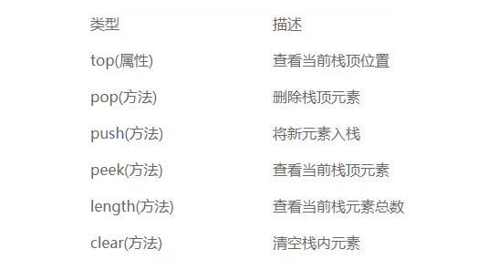

# 什么是堆栈
栈，又叫堆栈，是和列表类似的一种数据结构，但是却更高效，因为栈内的元素只能通过列表的一端访问，称为栈顶，数据只能在栈顶添加或删除，遵循 先入后出 (LIFO，last-in-first-out) 的原则，普遍运用于计算机的方方面面。
对栈的操作主要有两种，一是将一个元素压入栈，push 方法，另一个就是将栈顶元素出栈，pop 方法。
除此之外，栈还有其他的一些属性和方法：查看当前栈顶的元素值，我们使用 peek 方法，它仅仅返回栈顶元素值，并不删除它；clear 方法用于清空当前栈内的所有元素；top 属性记录当前栈顶位置；length 方法返回当前栈内元素总数等；接着我们定义栈的数据类型，并利用 JS 中的数组去实现它。

# 栈的实现
1 | //定义栈 |
我们利用 dataStore 来保存栈内元素，初始化为空数组，top 属性用于记录当前栈顶位置，初始化的时候为 0，
表示栈顶对应数组的起始位置是 0，如果有元素入栈，则该属性会随之反生变化。
首先我们先来实现第一个入栈方法。
# push：向栈内压入一个新的元素
1 | //该方法将一个新元素入栈，放到数组中 top 所对应的位置上，并将 top 的值加 1，让其指向数组的下一个空位置 |
能入栈，就得可以出栈，接着我们来看出栈方法：
# pop：取出栈顶元素
1 | //该方法与入栈相反，返回栈顶元素，并将 top 的值减 1 |
如何查看栈顶元素呢，peek 方法！
# peek：查看栈顶元素
1 | //该方法返回的是栈顶元素，即 top - 1 个位置元素 |
这里我做了个判断，如果一个空栈调用了 peek 方法，因为栈内没有任何元素，所以我这里返回了一个 ‘Empty’;
现在，我们已经有了基本的入栈、出栈、查看栈顶元素的方法，我们不妨试一试。
1 | //初始化一个栈 |
如果我放入了一些水果，吃掉了一个，我现在想知道我还剩多少个水果怎么办？length 方法可以实现
# length：返回栈内元素总数
1 | //该方法通过返回 top 属性的值来返回栈内总的元素个数 |
我们把代码恢复到出栈前的状态，也就是里面已经放了三个水果，接着我们来看看
1 | console.log( stack.length() ); // 3 |
好了，我们还剩最后一个 clear 方法，我们来实现一下
# clear：清空栈
1 | //该方法实现很简单，我们将 top 值置为 0 ， dataStore 数值清空即可 |
# 实现数制间的相互转换
我们可以利用栈将一个数字从一种数制转换成另一种数制。例如将数字 n 转换成以 b 为基数的数字，可以采用如下算法（该算法只针对基数为 2-9 的情况）：
- 最高位为 n % b ， 直接压入栈；
- 使用 n /b 来代替 n ;
- 重复上面的步骤，知道 n 为 0 ，并且没有余数；
- 以此将栈内元素弹出，直到栈空，并依次将这些元素排列，就得到了转换后的形式
1 | //进制转换（2-9） |